User guide
Your .pdf becomes
a video for your slides
Flip through a document like a book, underline the sentences that matter and record a video: transparent for Keynote or with the slide background for PowerPoint.